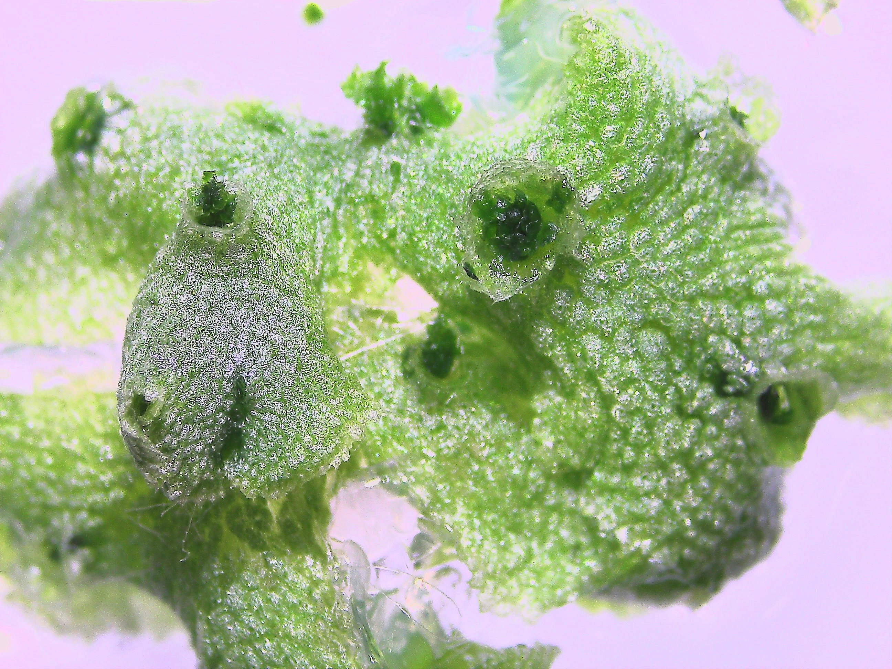
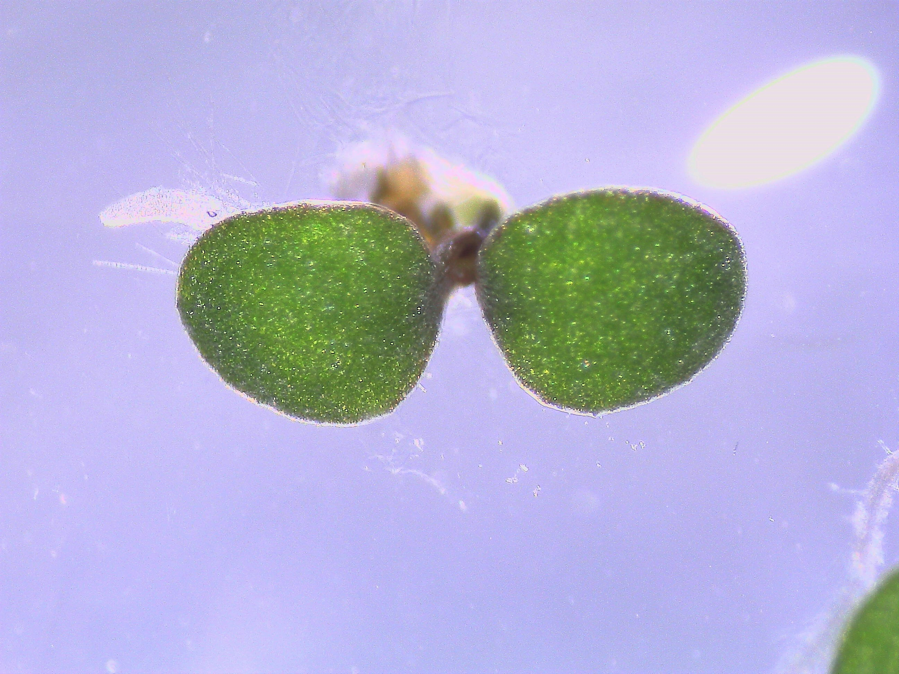
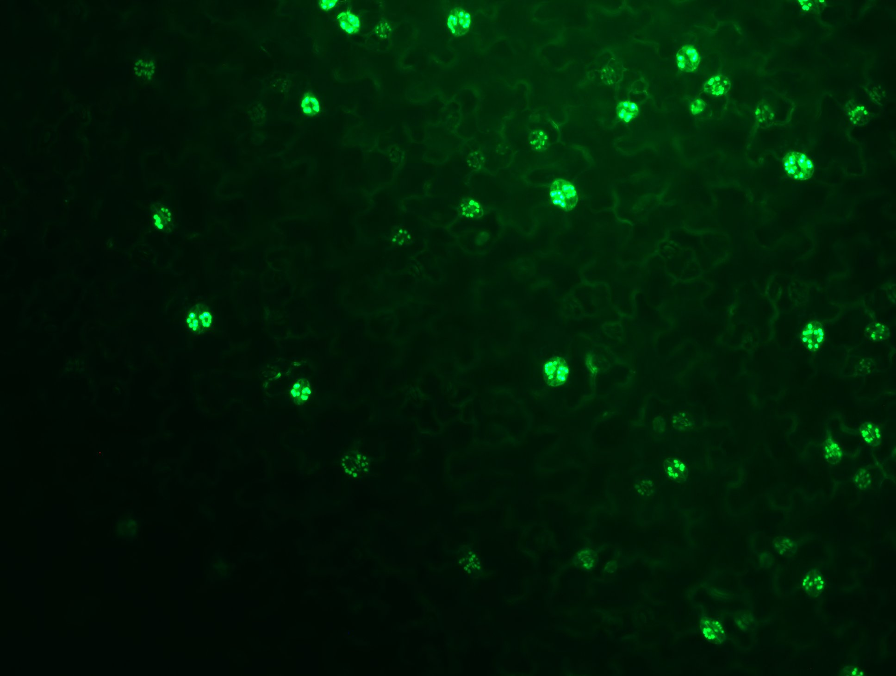
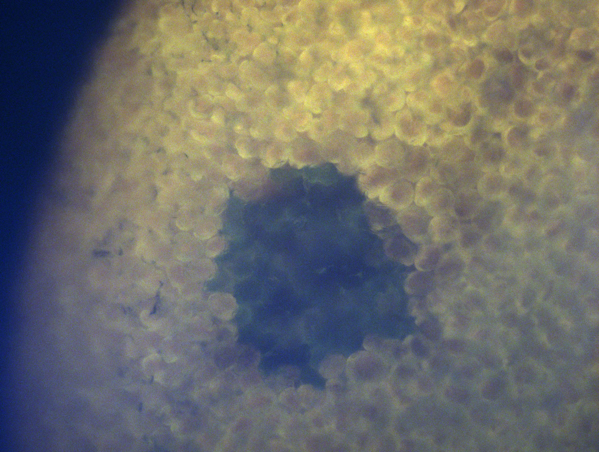
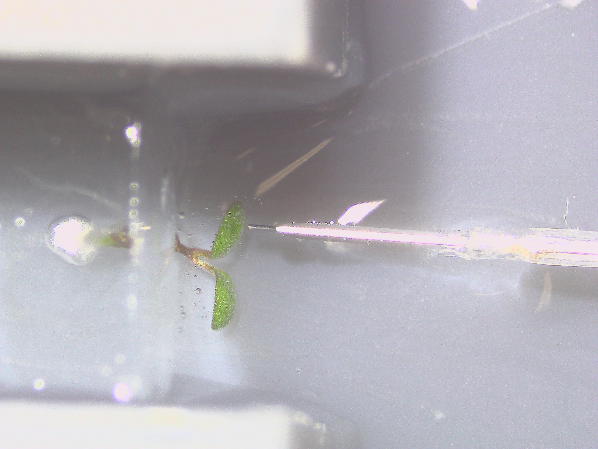
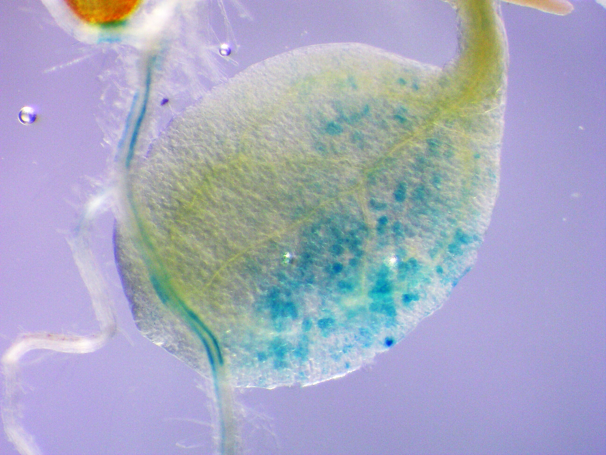
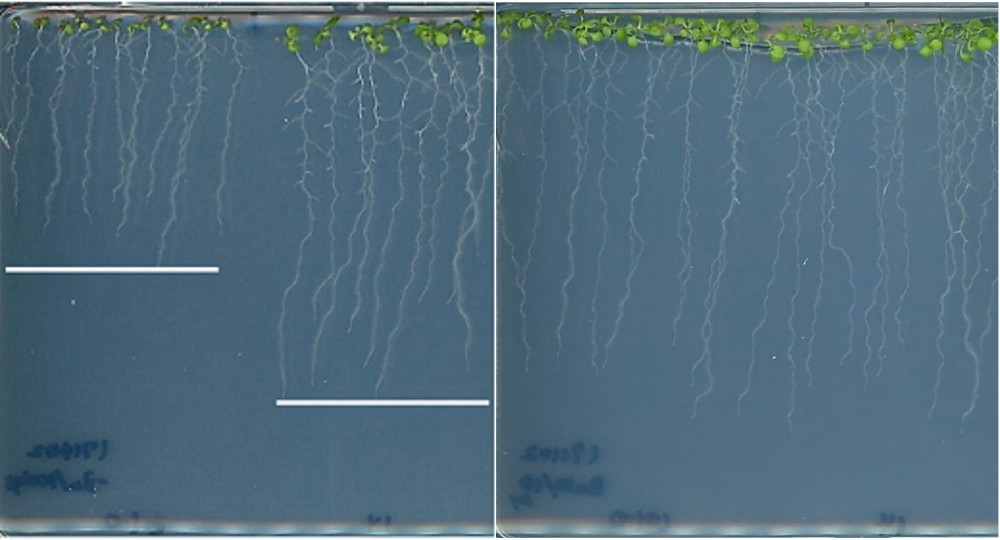

   

A-STEP バブルプロジェクト
本来は医療現場で血栓や眼球の治療に使われるメスを
バブルによるインジェクションの為に使用しています。 この研究は立命館大学、九州大学、株式会社BEXとの 共同研究によって行わています。

様々な植物を対象とした実験
シロイヌナズナ、ホウレンソウ、トマト、ゼニゴケ等、 様々な植物サンプルに対して実験を行っております。

植物の亜鉛欠乏耐性へのメカニズム
植物が亜鉛欠乏耐を示すメカニズムについて遺伝子や タンパク質レベルで実験を行っております。
亜鉛が欠乏すると植物は根の伸長が阻害されるなどの 生育阻害を受けます。